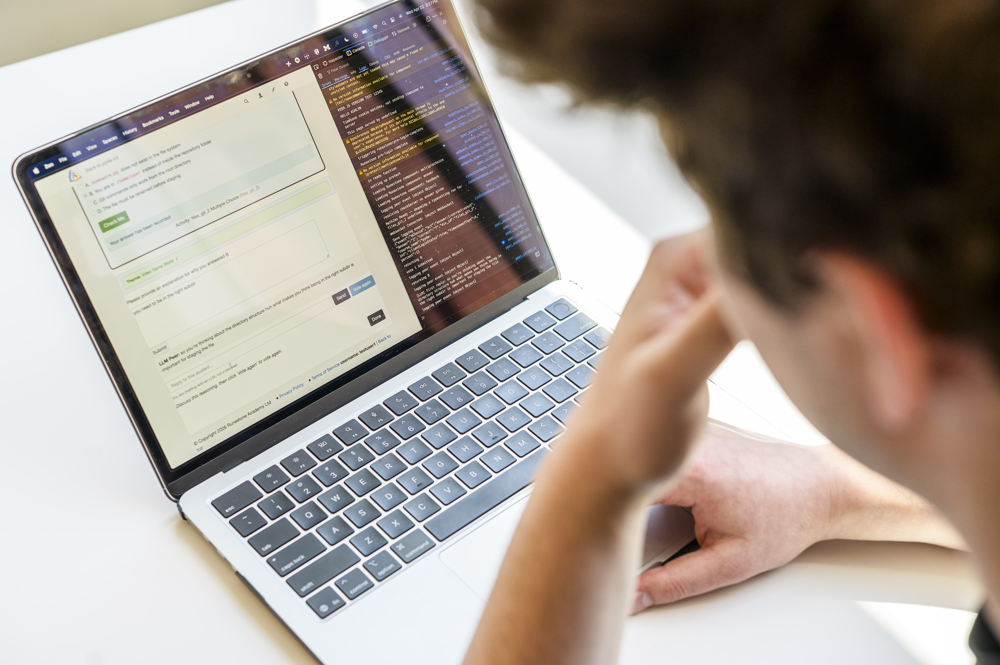

Launch Your Engaged Learning Journey
Transform your academic foundation into real-world impact. The UMSI
Engaged Learning Office (ELO) guides you through the crucial early
stages of project work—from self-reflection and community context
to team charters and initial client kickoff.
Phase 1: Preparing
Phase 2: Starting
Why Engaged Learning Starts Before the Work Begins
Engaged learning at UMSI is fundamentally different from traditional
classroom assignments. You are stepping out of controlled environments
and into complex, unscripted ecosystems where technical solutions
intersect with human lives, organizational cultures, and real
community needs.
The initial phase of a project is rarely about jumping straight into
execution—it is about building the foundation for ethical, sustainable
engagement. Taking time to reflect on your own positionality, audit
your team’s collective skills, and listen deeply to your partner’s
goals prevents project failure down the line. When you ground your
project in mutual respect, clear boundaries, and honest communication
from Day 1, you transform a simple class deliverable into a reciprocal
partnership that creates authentic value for everyone involved.
Phase 1: Preparing for the Experience
Before work begins, take time to set up the foundation, understand community context,
evaluate your team's readiness, and identify what you still need to learn.

Value & Narrative: Approach the Work as a Collaborative Learner
Before writing code, sketching wireframes, or analyzing datasets, engaged learners must cultivate
social
identity awareness and ethical humility. Entering a community or client environment without
examining your own
assumptions can lead to misaligned expectations or unintended harm. Preparing thoughtfully allows you to
approach partners not as an outside "expert" fixing a problem, but as a collaborative learner working
alongside stakeholders.
Preparing thoughtfully allows you to approach partners not as
an outside "expert" fixing a problem, but as a collaborative
learner working alongside stakeholders.
Focus & Objectives
-
Social & Community Awareness:
Examine personal identity, privilege, and community dynamics
using civic engagement frameworks.
-
Expectation & Role Alignment:
Understand program requirements, project commitments, and
leadership responsibilities.
-
Initial Scoping:
Assess organizational needs and evaluate initial project viability.
Questions to Consider
- What do I hope to learn from this experience?
- Who will be affected by the project and its outcomes?
- What assumptions am I making about the partner, community, or project?
- What knowledge and skills does my team already have?
- What knowledge or perspectives are missing from our team?
- How will the partner participate in project decisions?
- What would a mutually beneficial outcome look like?

Recommended Preparation Process
-
Reflect on your position:
Identify the experiences, identities, assumptions, and areas
of privilege that may shape your approach.
-
Learn about the context:
Research the organization, community, project history,
affected stakeholders, and broader social conditions.
-
Set learning goals:
Record the technical, professional, interpersonal, and
ethical skills you want to develop.
-
Review team capacity:
Compare the team's skills and availability with the likely
needs of the project.
-
Identify open questions:
Write down what your team needs to learn from the partner
before confirming the project's scope, methods, or deliverables.
Featured Preparation Resources
Phase 2: Starting the Experience
Establishing professional communication, conducting initial meetings,
and finalizing partnership agreements.
Value & Narrative
First impressions shape the trajectory of a partnership. The
starting phase is where abstract project ideas turn into
structured, professional commitments.
By establishing clear team contracts, co-creating agendas, and
aligning on project scope early, you build safety
within your team and trust with your client. Learning how to
navigate early ambiguity is one of the most valuable professional
capabilities you will gain at UMSI.
Focus & Objectives
-
Partner Communication:
Draft clear, professional outreach to launch working relationships.
-
First Meetings:
Structure productive kickoff meetings that define roles and project bounds.
-
Formalizing Agreements:
Document team commitments and scope agreements shared by all stakeholders.
Featured Starting Resources